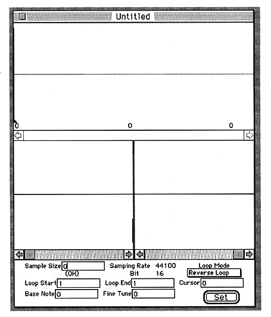

Return to previous page
｜
Return to menu
｜
Go to next page
3. Tutorial
Here is a simple usage.
● Edit window display
Starts up the waveform editor.
The waveform editor first checks to see if a board with SCSP is installed on the Macintosh. Exit if no board is installed.
Select New from the File menu.
The edit window for editing the waveform appears.

Return to previous page
｜
Return to menu
｜
Go to next page